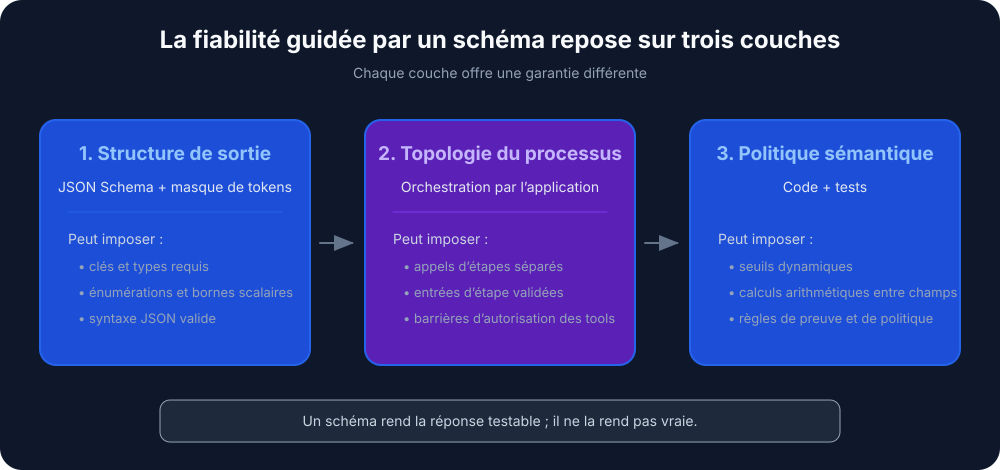
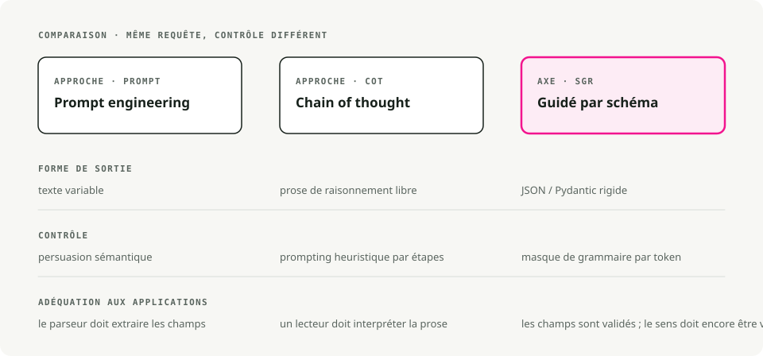
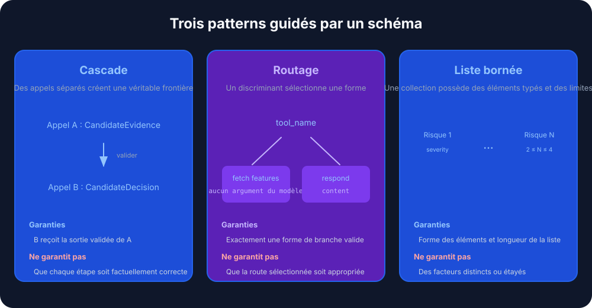
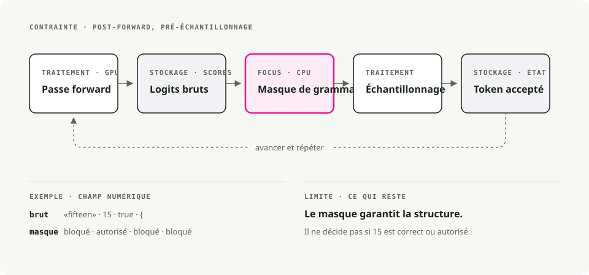
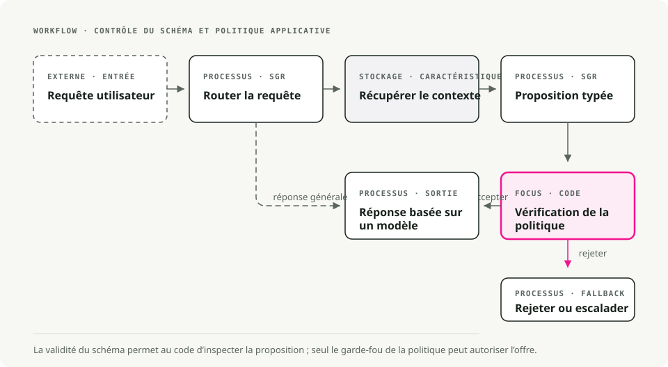

Traduction automatique
Cet article a été traduit automatiquement depuis la version originale en anglais.
Reasoning guidé par schéma sur vLLM : sorties structurées avec xgrammar et Pydantic
Une boucle de retry est un aveu. Elle dit : j'attendais du modèle qu'il renvoie un JSON valide, ce n'est pas arrivé, donc je vais relancer et croiser les doigts. La plupart des codes d'agents LLM avec lesquels j'ai travaillé s'appuient massivement sur des retries, et le JSON finit quand même par casser assez souvent pour que quelqu'un câble une alerte dessus.
Le Schema-Guided Reasoning (SGR) évite ce jeu de retries en imposant le schéma au niveau du token. Vous définissez la topologie du raisonnement comme un schéma Pydantic, et le moteur d'inférence masque tous les tokens qui le violeraient avant l'échantillonnage. La sortie est valide par construction, pas après retry.
TL;DR. SGR utilise le constrained decoding pour contraindre la sortie d'un LLM à un schéma Pydantic que vous contrôlez. Associez-le au backend xgrammar de vLLM et vous obtenez un JSON valide à chaque fois, avec un surcoût de latence négligeable.
Qu'est-ce que le Schema-Guided Reasoning ?
Le Schema-Guided Reasoning est une technique décrite en 2024 par Rinat Abdullin. Au lieu de laisser le modèle compléter librement du texte (ce qui peut être incohérent ou ambigu), vous lui fournissez un gabarit strict qui définit :
- les étapes qu'il doit suivre, pour qu'il ne puisse pas sauter l'analyse
- l'ordre de ces étapes, pour que le raisonnement aille des données vers la décision
- où il doit concentrer son attention, pour que la profondeur se place là où elle compte
Pensez-y comme à une checklist cognitive que le modèle doit suivre.

Pourquoi SGR compte
Quand vous définissez un schéma avec des champs comme churn_analysis, margin_math et max_discount_percent, le modèle doit les remplir dans l'ordre. Il ne peut pas sauter directement à la décision de remise sans d'abord écrire l'analyse.
Vous obtenez ainsi :
- un raisonnement reproductible d'une exécution à l'autre
- des sorties auditables où chaque étape peut être inspectée
- des champs intermédiaires que vous pouvez évaluer sur un dataset de test
- des modèles plus petits qui deviennent exploitables, puisque le schéma impose ce que le modèle devrait sinon apprendre
- le gain de précision de 5 à 10 % souvent rapporté sur des charges de production
SGR vs Chain of Thought vs prompt engineering
Les trois approches diffèrent surtout par le niveau de contrainte qu'elles imposent au modèle.

| Fonctionnalité | Prompt engineering | Chain of Thought | Schema-Guided Reasoning |
|---|---|---|---|
| Structure de sortie | Texte variable | Prose libre | JSON/Pydantic rigide |
| Mécanisme de contrôle | Persuasion sémantique (\"Please output JSON\") | Prompting heuristique (\"Let's think step by step\") | Constrained decoding (basé sur une grammaire) |
| Flux de raisonnement | Déterminé par le modèle | Déterminé par le modèle | Déterminé par le développeur (topologie du schéma) |
| Auditabilité | Faible (nécessite du parsing) | Faible (nécessite de lire de la prose) | Élevée (inspection au niveau des champs) |
| Intégration | Difficile (parsing par regex) | Difficile (format variable) | Triviale (désérialisation native en objet) |
| Taux d'erreur | Élevé (variabilité du format) | Modéré (hallucination de format) | Quasi nul (syntaxe imposée par le moteur) |
| Exigence sur le modèle | Bon suivi d'instructions | Forte capacité de raisonnement | Fonctionne aussi avec des modèles plus petits |
Prompt engineering : persuasion sémantique
Please analyze the customer data and output your response as valid JSON
with the following structure: {"discount": <number>, "reason": <string>}
Be careful with the formatting!
Vous espérez que la compréhension du modèle de \"output JSON\" l'emporte sur sa tendance à être conversationnel. Une mise à jour du modèle, un changement de température ou un autre exemple few-shot peuvent casser votre parseur.
Chain of Thought : meilleur raisonnement, même problème de structure
Let's think step by step:
1. First, I'll analyze the customer's churn risk...
2. Then I'll calculate the margin...
3. Therefore, I recommend a 15% discount.
Le CoT améliore la précision du raisonnement mais dégrade la structure. La sortie est une prose imprévisible, quasiment impossible à parser de façon fiable. En général, vous finissez par faire un second appel LLM uniquement pour extraire les données structurées.
SGR : chain of thought structuré
SGR conserve l'intuition du CoT selon laquelle un raisonnement intermédiaire améliore la précision. Il formalise simplement les étapes :
class PricingLogic(BaseModel):
# 1. Data Analysis (must complete before decision)
churn_analysis: str = Field(..., description="Analyze churn_probability")
financial_analysis: str = Field(..., description="Analyze cart_value and margin")
# 2. Math Enforcement (explicit calculation)
margin_math: str = Field(..., description="Calculate: 'Cart $X * Y% = $Z'")
# 3. Decision Constraint (bounded by prior analysis)
max_discount_percent: float = Field(..., description="Max allowed discount")
# 4. Final Output
offer_code: str
customer_message: str
Le modèle ne peut pas produire max_discount_percent tant que churn_analysis, financial_analysis et margin_math ne sont pas remplis. Le schéma impose l'ordre du raisonnement.
Patterns SGR
SGR comporte trois patterns fondamentaux qui se composent en workflows plus larges.

1. Cascade : étapes de raisonnement séquentielles
Cascade impose un ordre de raisonnement. Chaque champ doit être complété avant le suivant.
from pydantic import BaseModel
from typing import Literal, Annotated
from annotated_types import Ge, Le
class CandidateEvaluation(BaseModel):
"""Evaluate a job candidate with enforced reasoning order."""
# Step 1: Summarize (forces context awareness)
brief_candidate_summary: str
# Step 2: Rate (bounded integer)
rate_skill_match: Annotated[int, Ge(1), Le(10)]
# Step 3: Decide (constrained choices)
final_recommendation: Literal["hire", "reject", "hold"]
Cas d'usage adaptés : évaluation de candidats, classification de documents, analyse de conformité, diagnostic médical.
Le modèle doit écrire brief_candidate_summary avant de pouvoir noter, puis noter avant de pouvoir recommander. Il n'y a pas de raccourci.
2. Routing : un switch sémantique
Routing pousse le modèle à s'engager sur un seul chemin parmi un ensemble d'options, implémenté avec des types Union.
from pydantic import BaseModel
from typing import Literal, Union
class FeatureLookup(BaseModel):
"""Route to database lookup."""
rationale: str
tool_name: Literal["fetch_user_features"] = "fetch_user_features"
user_id: str
class GeneralResponse(BaseModel):
"""Standard response for non-pricing queries."""
tool_name: Literal["respond"] = "respond"
content: str
class RouterSchema(BaseModel):
"""The model must pick exactly ONE branch."""
action: Union[FeatureLookup, GeneralResponse]
Cas d'usage adaptés : classification d'intention, sélection d'outil, triage de support, dispatch multi-agent.
Le discriminateur Literal (tool_name) force le modèle à choisir une seule branche et à ne remplir que les champs nécessaires à cette branche.
3. Cycle : raisonnement répété avec des listes
Cycle force le modèle à produire plusieurs éléments, avec des bornes sur leur nombre.
from pydantic import BaseModel
from typing import List, Literal, Annotated
from annotated_types import MinLen, MaxLen
class RiskFactor(BaseModel):
explanation: str
severity: Literal["low", "medium", "high"]
class RiskAssessment(BaseModel):
"""Generate 2-4 risk factors."""
factors: Annotated[List[RiskFactor], MinLen(2), MaxLen(4)]
Cas d'usage adaptés : évaluation des risques, extraction d'issues, appels d'outils en parallèle, planification multi-étapes.
Les bornes MinLen et MaxLen imposent au moins 2 éléments et au plus 4. Combiné à Routing, c'est ainsi que vous orchestrez un batch à largeur fixe d'appels d'outils.
Faire fonctionner SGR : le constrained decoding
Les patterns ci-dessus ne sont que des schémas Pydantic. Ce qui les rend contraignants, c'est le constrained decoding (aussi appelé Structured Output).
Le constrained decoding modifie l'étape de génération de tokens. Au lieu de laisser le modèle échantillonner librement dans son vocabulaire, le moteur applique un masque de grammaire qui bloque les tokens qui violeraient le schéma. Cela se passe dans le moteur d'inférence, pas dans votre code applicatif.
[!TIP] SGR ne nécessite pas de \"reasoning models\" comme o1 ou DeepSeek-R1. Il fonctionne très bien avec des modèles instruction-tuned, et particulièrement bien avec des modèles distillés à partir de modèles de raisonnement.
Fournisseurs cloud qui le prennent en charge
La plupart des fournisseurs LLM modernes proposent des sorties structurées via le constrained decoding :
| Fournisseur | Support |
|---|---|
| OpenAI | Structured Outputs (y compris Azure). GPT-5 utilise JSON Schema via llguidance |
| Google/Gemini | Support de JSON Schema depuis nov. 2025 (Pydantic et Zod) |
| Mistral | Custom Structured Output |
| Grok | Structured Outputs pour plusieurs modèles |
| Fireworks AI | JSON Schema |
| Cerebras | Structured Outputs |
| OpenRouter | Dépend du fournisseur aval, mappé vers JSON Schema |
Moteurs d'inférence qui le prennent en charge
Pour les modèles auto-hébergés, les principaux moteurs disposent tous d'un backend de constrained decoding :
| Moteur | Backend |
|---|---|
| vLLM | xgrammar ou guidance |
| SGLang | Outlines, XGrammar ou llguidance |
| TensorRT-LLM | GuidedDecoding |
| Ollama | Structured Outputs |
Pourquoi cet article se concentre sur vLLM et xgrammar
Quelques raisons :
- vLLM est le moteur d'inférence LLM open source le plus largement déployé, donc ce que vous construisez ici se porte facilement ailleurs.
- xgrammar est implémenté en C++ et ajoute une latence négligeable.
- L'API de vLLM est compatible OpenAI, ce qui rend la migration depuis des fournisseurs cloud peu coûteuse.
- xgrammar gère les schémas imbriqués complexes, les unions et les structures récursives.
La section suivante explique comment xgrammar impose réellement un schéma au niveau du token.
Comment xgrammar impose les schémas
Cette partie mérite d'être comprise précisément, car elle change la façon de déboguer et d'ajuster les workflows SGR.

Où le masquage se produit
xgrammar modifie les logits de sortie après le forward pass du modèle et avant l'échantillonnage. Il ne modifie pas le modèle lui-même ; il filtre les tokens qui peuvent être sélectionnés.
Une boucle d'inférence standard ressemble à ceci :
1. Input tokens → GPU Forward Pass → Logits (probability scores for all ~128K tokens)
2. Logits → Sampling (temperature, top-p, etc.) → Next Token
3. Repeat until done
xgrammar s'insère entre les étapes 1 et 2 :
1. Input tokens → GPU Forward Pass → Raw Logits
2. Raw Logits → xgrammar Logits Processor → Masked Logits
3. Masked Logits → Sampling → Next Token (guaranteed valid)
4. Repeat until done
Le modèle calcule toujours sa distribution de probabilité complète sur le GPU. xgrammar s'exécute ensuite sur le CPU et applique un bitmask à ces logits avant l'échantillonnage. Les tokens invalides voient leurs logits fixés à -∞, ce qui ramène exactement leur probabilité à 0 après softmax.
Deux phases
xgrammar divise le travail entre compilation et exécution, ce qui le rend rapide.
Phase 1 : compilation de la grammaire, une fois par schéma
# This happens once per schema
tokenizer_info = xgr.TokenizerInfo.from_huggingface(tokenizer)
grammar_compiler = xgr.GrammarCompiler(tokenizer_info)
compiled_grammar = grammar_compiler.compile_json_schema(schema_json)
Pendant la compilation, xgrammar :
- Convertit le JSON Schema en grammaire hors contexte.
- Construit un automate à pile (PDA), c'est-à-dire une machine à états avec une pile pour gérer des structures imbriquées comme
{"a": {"b": {"c": ...}}}. - Pré-calcule quels tokens sont valides à chaque position de la grammaire. Le résultat est le \"adaptive token mask cache\".
- Catégorise les tokens en \"context-independent\" (mettables en cache) ou \"context-dependent\" (à vérifier à l'exécution selon l'état de la pile).
[!NOTE] Environ 99 % des tokens se révèlent context-independent et finissent en cache (papier XGrammar). La plupart des vérifications de validité à l'exécution ne sont donc que des consultations de cache, d'où la vitesse de xgrammar.
Phase 2 : génération du masque à l'exécution, à chaque token
À chaque étape de génération :
- Le
GrammarMatchersuit la position courante dans la grammaire. - Il consulte le masque pré-calculé pour les tokens context-independent.
- Il exécute le PDA pour vérifier les tokens context-dependent restants.
- Il combine le tout en un bitmask final et l'applique aux logits.
Pourquoi des automates à pile et pas des regex ?
À cause de l'imbrication. Une expression régulière (une machine à états finis) ne peut pas faire correspondre de manière fiable des structures comme :
{ "user": { "profile": { "settings": { "theme": "dark" } } } }
La difficulté se situe au niveau des accolades fermantes }}} : il faut se souvenir de combien ont été ouvertes. Un automate à pile dispose d'une pile qui suit cela, donc il peut gérer une profondeur d'imbrication arbitraire. C'est aussi pourquoi xgrammar peut imposer des types Union, des objets imbriqués et des schémas récursifs, là où les approches fondées sur des regex atteignent leurs limites.
Exemple concret : génération d'un champ flottant
Quand le modèle génère "max_discount_percent":, xgrammar sait grâce au schéma qu'un float doit venir ensuite. Le masque :
- autorise (probabilité inchangée) :
0,1,2, ...,9,.,- - bloque (probabilité fixée à 0) :
",{,[,true,false,null, ainsi que le reste du vocabulaire de plus de 128K tokens
Le forward pass a peut-être attribué une forte probabilité au mot "fifteen". Après le masque de xgrammar, ce token a une probabilité de 0. Le modèle est forcé de produire des chiffres.
Pourquoi un \"surcoût quasi nul\"
Trois raisons :
- Exécution en parallèle. Le calcul du masque sur le CPU se superpose au forward pass suivant sur le GPU. Pendant que le GPU calcule les logits pour le token N+1, le CPU calcule le masque pour le token N.
- Cache. L'essentiel du travail de validité est effectué à la compilation. À l'exécution, il s'agit surtout de lectures de cache.
- Implémentation C++. Le hot path est en C++, pas en Python, et le masque est appliqué aux logits en place.
Dans les benchmarks, xgrammar affiche un surcoût négligeable, et la génération structurée peut parfois être plus rapide que la génération non contrainte, car le vocabulaire contraint rend l'échantillonnage moins coûteux.
Implémentation pratique avec vLLM
La référence est le projet sgr-discount-manager, une petite démo qui utilise SGR pour la tarification dynamique.

Structure du projet
sgr/
├── agent.py # Main orchestration
├── models/
│ └── schemas.py # Pydantic SGR schemas
├── prompts/
│ ├── routing.py # Phase 1 prompts
│ └── pricing.py # Phase 3 prompts
├── store/
│ └── hybrid_store.py # Hot/Cold data retrieval
└── utils/
└── llm_client.py # LLM client wrapper with xgrammar
Étape 1 : définir les schémas
# sgr/models/schemas.py
from pydantic import BaseModel, Field
from typing import Literal, Union
# --- Phase 1: Routing (Union for branching) ---
class FeatureLookup(BaseModel):
"""Route to DB lookup if pricing context is needed."""
rationale: str
tool_name: Literal["fetch_user_features"] = "fetch_user_features"
user_id: str
class GeneralResponse(BaseModel):
"""Standard response for non-pricing queries."""
tool_name: Literal["respond"] = "respond"
content: str
class RouterSchema(BaseModel):
action: Union[FeatureLookup, GeneralResponse]
# --- Phase 2: Pricing Logic (Cascade for sequential reasoning) ---
class PricingLogic(BaseModel):
"""
Strict reasoning topology for dynamic pricing.
Fields are ordered to enforce the analysis→decision flow.
"""
# 1. Data Analysis (Reflection)
churn_analysis: str = Field(...,
description="Analyze churn_probability (High > 0.7).")
financial_analysis: str = Field(...,
description="Analyze cart_value and profit_margin.")
# 2. Hard Math Enforcement
margin_math: str = Field(...,
description="Calculate absolute profit: 'Cart $200 * 0.20 Margin = $40'.")
# 3. The Decision Constraint
max_discount_percent: float = Field(...,
description="Max allowed discount %. NEVER exceed margin.")
# 4. Final Output
offer_code: str = Field(..., description="Generated code (e.g. SAVE20).")
customer_message: str = Field(..., description="The final polite offer text.")
Étape 2 : un client LLM qui active xgrammar
# sgr/utils/llm_client.py
from openai import OpenAI
from pydantic import BaseModel
from typing import TypeVar
import json
T = TypeVar("T", bound=BaseModel)
class LLMClient:
"""Wrapper for vLLM with xgrammar-enforced structured generation."""
def __init__(self, base_url: str = "http://localhost:8000/v1"):
self.client = OpenAI(base_url=base_url, api_key="EMPTY")
self.model = self._get_available_model()
def _get_available_model(self) -> str:
"""Auto-detect the model running on vLLM server."""
try:
models = self.client.models.list()
if models.data:
return models.data[0].id
except Exception:
pass
return "Qwen/Qwen2.5-7B-Instruct"
def run_sgr(self, messages: list[dict], schema_class: type[T]) -> T:
"""Run inference with Schema-Guided Response constraints.
Uses vLLM's guided_json with xgrammar backend to enforce
strict schema constraints at the token generation level.
"""
schema_dict = schema_class.model_json_schema()
# Enhance system message with schema for model guidance
enhanced_messages = messages.copy()
if enhanced_messages and enhanced_messages[0]["role"] == "system":
schema_json = json.dumps(schema_dict, indent=2)
enhanced_messages[0] = {
"role": "system",
"content": (
enhanced_messages[0]["content"]
+ f"\n\nRespond with JSON matching this schema:\n{schema_json}"
),
}
# vLLM's guided_json with the xgrammar backend
completion = self.client.chat.completions.create(
model=self.model,
messages=enhanced_messages,
temperature=0.1, # Low temp for deterministic reasoning
extra_body={
"guided_json": schema_dict, # Pydantic schema as dict
"guided_decoding_backend": "xgrammar", # Hardware-enforced
},
)
raw_response = completion.choices[0].message.content
return schema_class.model_validate_json(raw_response)
[!NOTE] >
guided_jsonaccepte un dict JSON Schema. Avecguided_decoding_backend: "xgrammar", le LLM ne peut générer que des tokens formant un JSON valide conforme à votre schéma.
Étape 3 : orchestrer l'agent
# sgr/agent.py
from .models.schemas import PricingLogic, RouterSchema
from .prompts.routing import build_routing_prompt
from .prompts.pricing import build_pricing_context_prompt, ASSISTANT_FETCH_MESSAGE
from .store.hybrid_store import HybridFeatureStore
from .utils.llm_client import LLMClient
def pricing_agent(user_query: str, user_id: str) -> str:
"""Process a pricing query with three-phase SGR workflow."""
llm = LLMClient()
feature_store = HybridFeatureStore()
# Build conversation history
history = [
{"role": "system", "content": build_routing_prompt(user_id)},
{"role": "user", "content": user_query},
]
# --- Phase 1: Routing (Uses RouterSchema) ---
print(f"🤖 Processing: '{user_query}' for {user_id}")
decision = llm.run_sgr(history, RouterSchema)
print(f"📍 Routing decision: {decision.action.tool_name}")
if decision.action.tool_name == "respond":
return decision.action.content
# --- Phase 2: Context Retrieval ---
if decision.action.tool_name == "fetch_user_features":
print(f"🔍 Fetching features for {user_id}...")
context = feature_store.get_user_context(user_id)
if not context:
return "Error: User profile not found."
print(f" [Data] LTV: ${context.get('user_ltv')} | "
f"Margin: {context.get('cart_profit_margin', 0) * 100}%")
# Inject context into conversation
history.append({"role": "assistant", "content": ASSISTANT_FETCH_MESSAGE})
history.append({
"role": "user",
"content": build_pricing_context_prompt(
churn_prob=context.get("churn_probability", 0.5),
cart_val=context.get("current_cart_value", 100),
margin=context.get("cart_profit_margin", 0.2),
user_ltv=context.get("user_ltv", 0),
),
})
# --- Phase 3: SGR Logic Execution (Uses PricingLogic) ---
print("🧠 Calculating Offer (Schema Enforced)...")
offer = llm.run_sgr(history, PricingLogic)
# Audit log — the SGR benefit: explicit reasoning traces
print(f" [Audit] Math: {offer.margin_math}")
print(f" [Audit] Max Allowed: {offer.max_discount_percent}%")
return offer.customer_message
return "I'm sorry, I couldn't process your request."
if __name__ == "__main__":
response = pricing_agent("I want a discount or I'm leaving!", "user_102")
print(f"\n💬 Final Reply: {response}")
Étape 4 : exécuter vLLM avec xgrammar
# Start vLLM server with xgrammar backend (default in recent versions)
python -m vllm.entrypoints.openai.api_server \
--model Qwen/Qwen2.5-7B-Instruct \
--port 8000
# Run the agent
uv run python -m sgr.agent
Exemple de sortie
🤖 Processing: 'I want a discount or I'm leaving!' for user_102
📍 Routing decision: fetch_user_features
🔍 Fetching features for user_102...
[Data] LTV: $1,500 | Margin: 20%
🧠 Calculating Offer (Schema Enforced)...
[Audit] Math: Cart $200 * 0.20 Margin = $40
[Audit] Max Allowed: 15.0%
💬 Final Reply: We value your loyalty! Here's a special 15% discount
with code SAVE15. This reflects our appreciation for your continued
business with us.
Le journal d'audit montre le travail réel du modèle : il a calculé la marge ($40 sur un panier de $200 à 20 %) et encadré la remise pour que l'offre reste dans la contrainte de profit.
Bonnes pratiques
Conception de schéma
- Ordonnez les champs selon le flux de raisonnement. Les champs d'analyse viennent avant les champs de décision.
- Rédigez des descriptions
Fieldexplicites. Elles guident l'attention du modèle autant que le nom du champ. - Contraignez avec
LiteraletAnnotated. UtilisezLiteral["a", "b"]pour les enums etAnnotated[int, Ge(1), Le(10)]pour les bornes. - Gardez des schémas ciblés. Un schéma par phase de raisonnement, puis composez avec plusieurs appels.
Configuration vLLM
- Utilisez une température basse (0.1-0.3) pour un raisonnement déterministe.
- Laissez xgrammar gérer la structure. Ne luttez pas contre lui avec des instructions de formatage dans le prompt.
- Surveillez l'usage des tokens. SGR utilise généralement moins de tokens que CoT car il n'y a pas de prose verbeuse.
Considérations de production
- Versionnez vos schémas comme vous versionnez des APIs.
- Même avec SGR, les erreurs réseau et serveur doivent toujours être gérées proprement.
- Journalisez les sorties SGR brutes pour la conformité et le débogage.
- Testez avec des cas limites pour vérifier que le schéma tient aux frontières.
Conclusion
SGR est ce qui vous fait passer de \"ça marche en démo\" à \"ça marche en production\". Vous définissez la topologie du raisonnement dans Pydantic, vous laissez xgrammar l'imposer au moment du décodage, et la sortie est :
- valide à chaque fois, sans boucle de retry ni échec de parsing
- auditable au niveau des champs
- exploitable avec des modèles plus petits, car ils n'ont plus à maîtriser seuls le format
- moins coûteuse à exécuter, puisque vous utilisez moins de tokens, moins de retries et des modèles plus petits
La démo sgr-discount-manager connecte tous les exemples de code de cet article à un vrai serveur vLLM. Clonez-la et commencez à adapter les schémas à votre propre workflow.
Références
Framework SGR
- Schema-Guided Reasoning (SGR) — framework original de Rinat Abdullin
- SGR Patterns — patterns Cascade, Routing, Cycle
xgrammar
- XGrammar: Flexible and Efficient Structured Generation Engine for Large Language Models — Yixin Dong et al., arXiv:2411.15100 (article technique avec benchmarks)
- xgrammar GitHub — bibliothèque de génération structurée rapide et flexible
- xgrammar Documentation — documentation officielle avec guide de démarrage rapide
- xgrammar Quick Start — prise en main de xgrammar
- Achieving Efficient Structured Generation with XGrammar — article de blog MLC sur les internals de xgrammar
vLLM
- vLLM Structured Outputs — documentation officielle
Projet de démo
- sgr-discount-manager — démo fonctionnelle avec tous les exemples de code de cet article